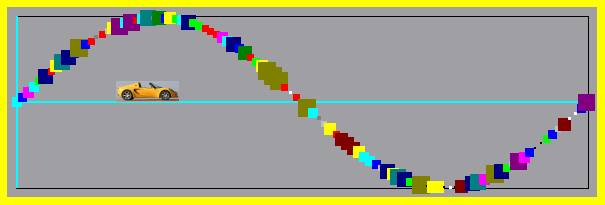

Dokumentation BUG - BabyDevelop Universal Grafikfläche

Konstruktor
BUG::BUG(QWidget* elternObjekt = 0);
Beispiel
BUG* meineGrafikflaeche;
meineGrafikflaeche = new BUG(this);
Öffentliche Methoden
Grafikfläche löschen
Linie zeichnen
void zeichneLinie(double x0, double y0, double x1, double y1, int farbe, int breite);
Anmerkung
Parameter farbe ist optional, Vorgabe=2 (schwarz).
Parameter breite ist optional, Vorgabe=0 (ein Pixel).
Punkt zeichnen
void zeichnePunkt(double x, double y, int farbe, int durchmesser);
Anmerkung
Parameter farbe ist optional, Vorgabe=2 (schwarz).
Parameter durchmesser ist optional, Vorgabe=0 (ein Pixel).
Bild darstellen
void zeichneBild(QString dateiName);
x-Bildposition setzen
void setzeBildX(double x);
y-Bildposition setzen
void setzeBildY(double y);
Breite des Zeichenbereichs setzen
void setzeBreite(int breite);
Anmerkung
Parameter breite in Pixel (mind. 100 = Vorgabe).
Der Zeichenbereich ist von der schwarzen Linie umrundet (siehe Bild oben). Die Linie selbst geört nicht dazu.
Höhe des Zeichenbereichs setzen
void setzeHoehe(int höhe);
Anmerkung
Parameter höhe in Pixel (mind. 100 = Vorgabe).
Randbreite setzen
void setzeRandbreite(int randBreite);
Anmerkung
Parameter randBreite in Pixel (Vorgabe = 0).
Der Rand ist der Bereich ab der schwarzen Linie bis zum Rand der grauen Fläche (siehe Bild oben).
Mathematische Grenzen des Koordinatensystems setzen - x_Minimum
void setzeXmin(double x_Minimum);
Anmerkung
Parameter x_Minimum < x_Maximum (Vorgabe=-1).
Mathematische Grenzen des Koordinatensystems setzen - x_Maximum
void setzeXmax(double x_Maximum);
Anmerkung
Parameter x_Maximum > x_Minimum (Vorgabe = +1).
Mathematische Grenzen des Koordinatensystems setzen - y_Minimum
void setzeYmin(double y_Minimum);
Anmerkung
Parameter y_Minimum < y_Maximum (Vorgabe = -1).
Mathematische Grenzen des Koordinatensystems setzen - y_Maximum
void setzeYmax(double y_Maximum);
Anmerkung
Parameter x_Maximum > x_Minimum (Vorgabe = +1).
Hintergrundfarbe setzen
void setzeHintergrundfarbe(int farbe);
Anmerkung
Parameter farbe aus dem Qt-GlobalColor-Namensraum.
//file:///usr/share/qt4/doc/html/qt.html#GlobalColor-enum
Beispiel
meineGrafikflaeche->setzeHintergrundfarbe(Qt::yellow);